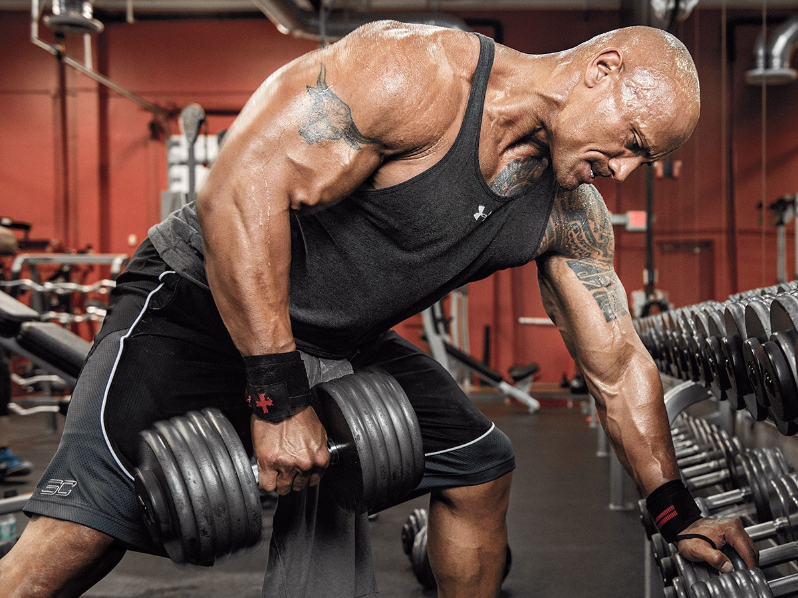

No importa tu nivel o experiencia, siempre es bueno tener la opción de pedir ayuda. Sobre todo si eres principiante y no sabes como o por dónde empezar. O si eres un deportista amateur que retoma el entrenamiento tras una lesión. Incluso si eres un atleta asiduo que busca nuevos challenges...
Solicitalo aquiUn entrenador personal es un profesional del fitness, cualificado en actividad física, que prescribe ejercicios, motiva y fija metas de forma individualizada, teniendo en cuenta las condiciones físicas y los objetivos de cada uno de sus clientes. Da el paso y solicita la ayuda de un profesional para cumplir todos tus objetivos.
 Solicitalo aqui